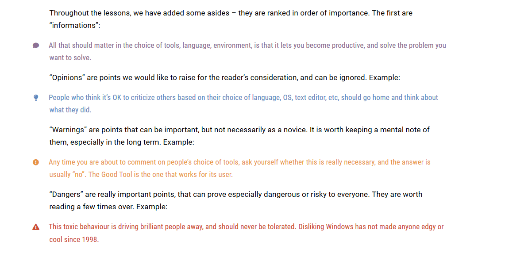
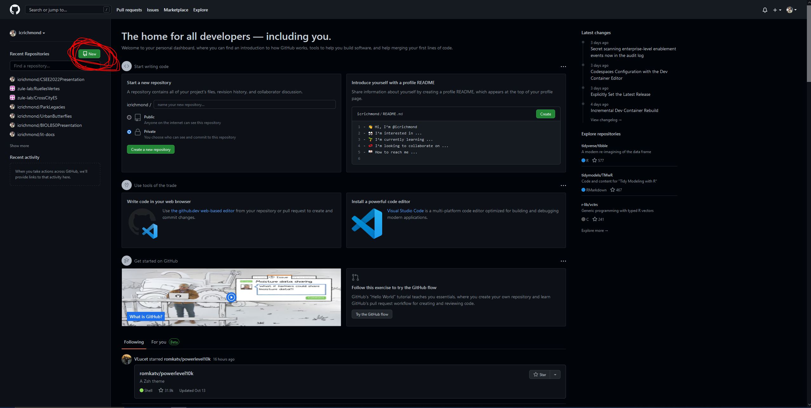
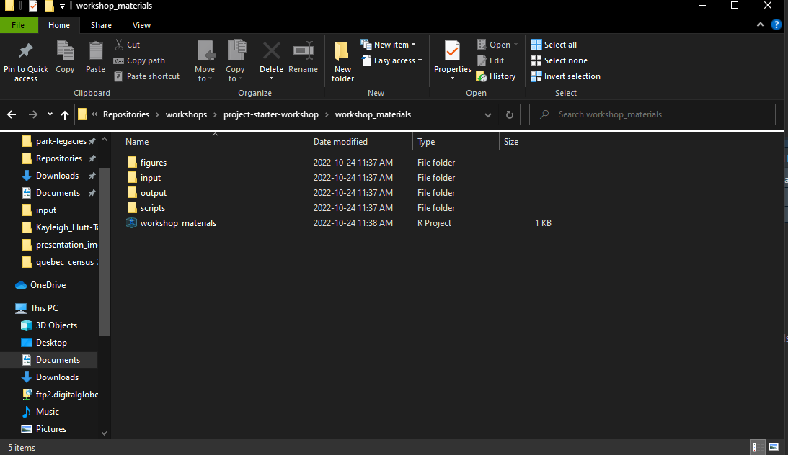

# This is all the code chunks used throughout the workshop, feel free to copy and paste them from here if it makes it easier to follow along
#### Loading packages -----------------------------------------
p <- c("tidyverse", "anytime")
lapply(p, library, character.only = T)
#### 1. Import data and investigate ---------------------------
# NOTE: this code is functioning on the assumption that you have a project set-up as per the slides provided
# initial import using tidyverse
tdf <- read_csv("workshop_materials/input/example-data.csv")
# when we investigate we see that both imports have some problems
# read_csv doesn't recognize that the file is delimited using ";" instead of ",". Let's use read_delim to fix that and add it to the data.table argument
tdf <- read_delim("input/example-data.csv", delim = ";")
# that's slightly better, but we still have the problem that the first 7 lines in tidyverse and first 8 lines in data.table need to be removed for this to be functional
tdf <- read_delim("input/example-data.csv", delim = ";", skip = 8)
# adding the skip argument fixes our problems! Now we can move on to other formatting issues... ZULE’s Project Starter Kit
Isabella Richmond & Kayleigh Hutt-Taylor
10/24/22
Part I: Prep Work
Learning Goals
My goal for this workshop is to give everyone the tools to:
- Confidently start a project in R
- Manage files in a way that is reproducible and easy to understand
- Allow people to document progress on their projects
- Know what they want to learn more about/ask me about in the coming months

Software Installation
- CHECK-IN: does everyone have everything working/installed?
- Absolutely the hardest part of this workshop
- Thank you for doing homework!!
- If you have technical issues throughout this presentation - raise your hand and we will either work through together or Kayleigh will help you troubleshoot
Project Workflow (yours can be different!)
Part II: GitHub
GitHub & Version Control
GitHub is a website-software that documents your progress on a project and allows you to do version control
- aka it takes snapshots of your progress across time so nothing gets lost
If you save rough drafts of your writing as you go along - that is version control
Really useful for when you want to go back/change your mind/re-run a test/etc.
Facilitates peace of mind + reproducible science + collaboration/sharing
The Basics of GitHub
- 5 basic jargon terms you need to know to use GitHub:
- Repository/repo: your project
- Clone: make a local copy of your project
- Commit: describe and commit to any changes you’ve made
- Push: send your changes to your online repo
- Pull: incorporate any changes to your local repo
- (BONUS branch: a side project)
- We will do all these things today!
Let’s Make a Project!
Let’s Make a Project!
ZULE’s GitHub has lots of repositories (including examples) if you are looking for inspiration for folder organization, ReadMe documentation, metadata, etc.
Cloning (perfect for spooky season)

Your Turn!
Let’s all try to make a repository on GitHub and clone it to our local computers
Part III: R & RStudio
Project Management in R
Good file structure is important because it 1
- Ensures the integrity of your data
- Makes it easier to share your code with people
- Makes it easier to upload your code/data with manuscript submission
- Makes it easier to come back after a break
File Management for R
Best practices include (but are not limited to) 1
- Use an R Project file so that your project is easily shareable
- Always treat raw data as read-only
- Store cleaned data in a separate folder (or distinguish clearly)
- Treat output as disposable - you should always be able to re-generate with script
- Have separate function and figure scripts
Basic File Structure
Your Turn!
Let’s all set up a project in the repository that we created in the last section
Part IV: Clean Data
“Tidy” Data:
- Framework for how data should be formatted for easy and efficient data cleaning created by Hadley Wickham
- Underpinnings of
tidyversepackages (e.g. ggplot2)
- Underpinnings of
Principles:
- Each variable forms a column
- Each observation forms a row
- Each type of observational unit forms a table
Cleaning Data in R
- Reproducible 1
- Open-source and cross-platform
- Reliable & clear
- High-quality graphics
- Great community & resources
- Scales with datasets
- Steep learning curve with a high payoff
Your Turn! (if we have time)
Let’s do some data cleaning! This code was written for a previous ZULE workshop
Reading Data
Special Characters
#### 2. Special Characters & UTF-8 encoding ---------------------
# What would life in Québec be without special characters! When we investigate our tidyverse dataframe, we see an issue with "Montréal"
# This issue often arises with accents and other special characters, when the dataframe is not properly read as UTF-8
# Luckily, we have an easy fix for this!
# tidyverse can be re-encoded after import
tdf$City <- enc2utf8(as(tdf$City, "character"))NAs & Associated Values
#### 3. NAs & associated values ---------------------------------
# there are often NAs in our datasets, which we may or may not want to keep
# often, there are also other values that count, biologically, as NAs but are not read into R automatically as NAs
# for example, blanks, "NA" (instead of a true NA), zeroes (for some variables), etc.
# NAs can be addressed when importing data, or after
# After importing
tdf$DBH <- na_if(tdf$DBH, 0) # tidyverse
# Drop the NAs (we don't want them, but you might in your analysis)
tdf <- drop_na(tdf) # tidyverseDuplicates
#### 4. Duplicates ----------------------------------------------
# sometimes, there are duplicate observations/rows in datasets. These can really mess up your analysis if you don't catch them
# testing your dataset for duplicates and then removing what you find is an important step in data cleaning!
# investigate which lines are duplicates
tdup <- tdf[duplicated(tdf), c("TreeID", "City", "DBH", "Species,")]
# tidyverse remove duplicates
tdf <- distinct(tdf)Column Names
#### 5. Column Names --------------------------------------------
# bad column names can make your life a living hell. Before moving into analysis make sure your column names follow best practices
# you'll thank me later! You don't want numbers, special characters, or spaces in your column names. Let's change our really bad column names
# tidyverse
tdf <- rename(tdf,
Date = "1st Date Measured",
Time = "Time Measured",
Species = "Species,")Value Formatting
#### 6. Value Formatting ---------------------------------------
## Spelling mistakes
# in our dataset, Toronto is spelled wrong. If you have a huge dataset with many spelling errors, OpenRefine is a great tool to use
# for us, our dataset is small and we can visually inspect it for spelling errors so we will replace the error in R
tdf$City <- recode(tdf$City, Toronno = "Toronto")
## Formatting column types
# city and species are currently formatted as character types, but for our study we want them to act as factors - we need to reclassify them
# its always important to check the classes of your data, R makes assumptions when importing your data and can be wrong!
tdf$City <- as_factor(tdf$City)
tdf$Species <- as_factor(tdf$Species)
## Text parsing
# we have a comma at the end of our species names, that we don't really want
# we can use text parsing to remove those unwanted commas from the Species column
# tidyverse
tdf$Species <- str_remove(tdf$Species, "[,]") # this will remove a comma anywhere in the columnDate/Time Formatting
#### 7. Date/Time Formatting -----------------------------------
# date and time formatting in R can be really tricky and frustrating sometimes but is often really necessary for field data (and other data)
# anytime is a cool package that makes the process a little bit easier
# first we want a date-time column, not separate entities
tdf <- unite(tdf, "DateTime", Date:Time, sep = " ")
# now use anytime to format the columns
# NOTE: Be careful of time zones, anytime will automatically set to where you are
# if you are using data from other time zones and need to indicate that, use the parsedate package
tdf$DateTime <- anytime(tdf$DateTime)Reshaping
#### 8. Reshaping ----------------------------------------------
# often the way datasets are initially set up are not ideal for things like plotting and modelling
# so we need to reshape the dataframe - make it longer or wider - so we can do what we need to do
# let's make the dataframe wider - we only want one entry per city
tdf_wide <- pivot_wider(tdf, names_from = Species, values_from = DBH)
# Hmmmmm that is not the most useful format - let's make it longer again (or melt it)
tdf_long <- pivot_longer(tdf_wide, cols = 4:14, names_to = "Species", values_to = "DBH", values_drop_na = T)Saving & Exporting
#### 9. Saving/Exporting Data ----------------------------------
# don't forget to save your beautiful, cleaned data!
# maybe you have a "cleaned" folder in your input directory, save it there
# if this is a final product, save it to output
# if this is an intermediate item, the best way to save it is as an .rds file
# if this is a final product or something you will be sharing, save it as a .csv
saveRDS(tdf, "output/TidyData.rds")
write_csv(tdf, "output/TidyData.csv")BONUS: Piping
#### BONUS: Piping ---------------------------------------------
# you may be wondering why tidyverse has so many seemingly redundant functions with baseR
# the tidyverse allows you to do something called piping (%>%), which can make your code much more efficient
# for example, if we took all the tidyverse code from above and piped it together, it would look like this:
tdf <- read_delim("input/example-data.csv", delim = ";", skip = 8)
tdf$City <- enc2utf8(as(tdf$City, "character"))
tdf <- tdf %>%
na_if(0) %>%
drop_na() %>%
distinct() %>%
rename(Date = "1st Date Measured",
Time = "Time Measured",
Species = "Species,") %>%
mutate(City = recode(City, Toronno = "Toronto")) %>%
mutate(City = as_factor(City)) %>%
mutate(Species = as_factor(Species)) %>%
mutate(Species = str_remove(Species, "[,]")) %>%
unite("DateTime", Date:Time, sep = " ") %>%
mutate(DateTime = anytime(DateTime)) %>%
pivot_wider(names_from = Species, values_from = DBH) %>%
pivot_longer(cols = 4:14, names_to = "Species", values_to = "DBH", values_drop_na = T) %>%
write_csv("output/TidyData.csv")Part V: Resources
This workshop - including examples & code can all be found here and formatted slides are here
Software Carpentry: R for Reproducible Scientific Analysis & Version Control with git
Data Carpentry: Data Analysis & Visualization in R for Ecologists & Data Organization in Spreadsheets for Ecologists
Smart People I Know: Dr. Christie Bahlai’s Reproducible Quantitative Methods Course & Wildlife Ecology & Evolution Lab’s Guide by Alec Robitaille & Val Lucet’s Git Workshop
PLUS: check out our zup “stats” thread - lots of helpful resources! AND ASK YOUR LABMATES!!!!